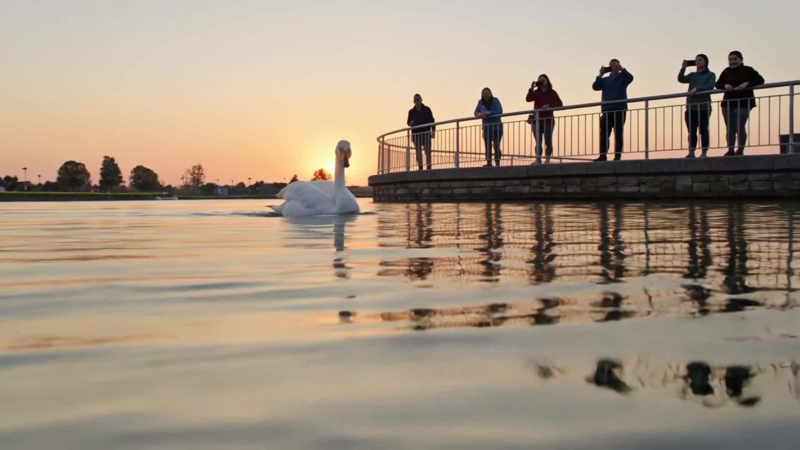
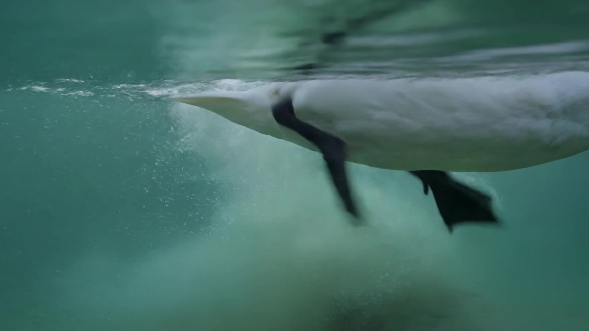

A hook-and-twist short film, generated with AI: a study in how a calm
surface and a hidden struggle make meaning through framing alone.
The Film
Generated with Kling AI · 16:9 · 8 seconds
The argument
A small crowd gathers at the lakeside, lifting their phones to capture a white swan
gliding across the water. It looks effortless — serene, weightless, perfectly composed.
This is the image everyone sees and admires.
Then the camera sinks below the waterline. Beneath that calm surface, the swan's feet are
paddling frantically, churning silt and bubbles, fighting just to hold its place.
That gap between the admired surface and the hidden struggle is the argument. The
film claims that what an audience sees is a curated surface, and grace is often the
visible half of an invisible effort. It is a statement about how images persuade us
— the heart of visual rhetoric — and a quiet note of empathy: everyone is paddling
underneath.
Hook & twist
Hook · 0–3s
Onlookers admiring a swan that glides in flawless calm at golden sunrise — a
beautiful, scroll-stopping surface.
Twist · final seconds
The camera descends beneath the water to reveal the frantic paddling below. The payoff is
delivered visually — through camera movement and a shift in light and tempo — not
through text or voiceover.
Class concepts, used intentionally
Four mise-en-scène concepts carry the reversal from admired surface to hidden
struggle. Each does rhetorical work, not decoration.
Composition
Open, spacious framing
above water with the swan centered and calm → tight, busy
underwater framing crowded with churning feet and bubbles.
Lighting & Color
Warm golden
sunrise light on the surface → cool greenish underwater light
below, flipping the mood from idyllic to turbulent.
Camera Movement
A smooth glide toward
the swan, then a vertical descent below the waterline — the hinge that turns the hook
into the twist.
Tempo / Motion
Slow, gentle motion
above the surface → fast, chaotic paddling below. The change in
pace lands the reveal.
A match cut on the waterline (surface ↔ underwater) can
later be added in editing to layer a montage technique on top of these four mise-en-scène
concepts.
Prompt engineering
Generated in Kling AI (Professional mode). Continuous-motion cues keep the clip from freezing
into a still, and the scene is split spatially — above vs. below the surface — so the
calm-and-frantic contrast reads as intentional, not conflicting.
Positive prompt
Cinematic 16:9 landscape, photorealistic, smooth continuous camera motion, shallow depth of field.
It opens on a small group of people standing at a lakeside railing at golden sunrise, smiling and pointing in admiration, phones raised, gazing at something on the water with warm soft light on their faces. The camera turns and glides toward the water, revealing a single graceful white swan gliding serenely across the perfectly calm mirror-like lake, elegant and undisturbed. The camera then slowly descends below the waterline, and the mood flips: beneath the calm surface the same swan's two webbed feet paddle frantically and chaotically, kicking up swirling bubbles and silt in fast desperate motion, cooler greenish underwater light, turbulent and busy.
Continuous fluid motion throughout, the contrast between admiration above and struggle below clearly felt.
Negative prompt
still image, frozen frame, static shot, no motion, slideshow, photo, distorted swan, deformed legs, extra limbs, multiple swans, blurry, low quality, text, captions, subtitles, watermark, logo
Stills
Frames from the admired surface and from the struggle beneath it.


How this meets the rubric
Hook / Twist · 2
A clear visual
argument: admired surface vs. hidden struggle, with a scroll-stopping hook and a reframing twist
delivered through image alone.
Technical · 4
Four class concepts used
intentionally: composition, lighting & color, camera movement, and tempo/motion contrast
(with an optional waterline match cut).
AI Craft · 4
Engineered prompt with
motion cues and a negative prompt; final clip cut to 5–8s with smooth timing and a sound
shift from calm ambience above to muffled, frantic splashing below.